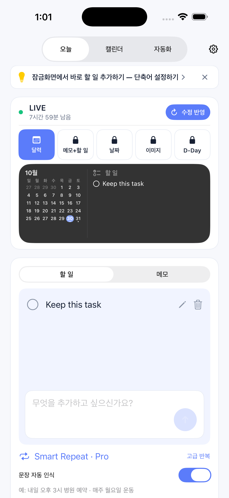
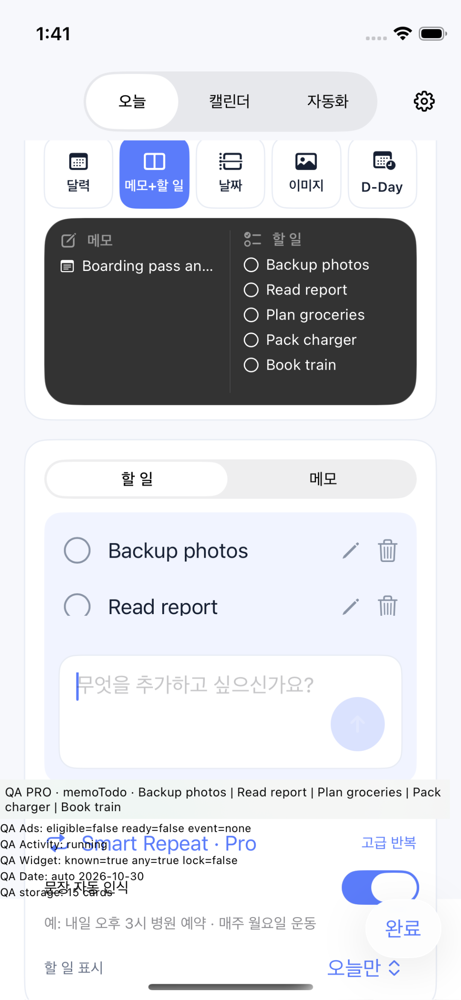
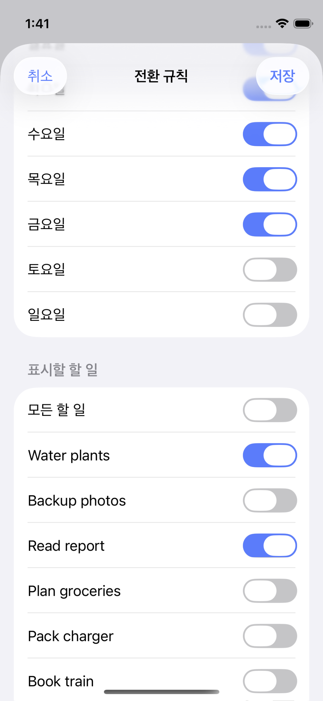

S01 첫 기록
9:41 ● ▰
LockTodoNote
오늘 잊고 싶지 않은
일은 무엇인가요?
적어 둔 일을 잠금화면에서 확인하고
앱을 열지 않고 완료하세요.
할 일
퇴근길 우유 사기|
오늘
메모부터 작성 · 나중에
먼저 하나만 적어 보세요.
꾸미기와 빠른 추가는 나중에 설정할 수 있어요.
꾸미기와 빠른 추가는 나중에 설정할 수 있어요.
첫 기록과 표시 결과를 먼저 연결합니다. 단축어·알림·Pro 선택은 뒤로 미룹니다.
새로 적은 일이 중요한 일을 밀어내지 않게 합니다. 작성은 기록을, 잠금화면 설정은 표시를 바꿉니다. 아래의 변경 후 화면은 정적 시안이며 앱·iOS 위젯의 실제 동작이나 OS 지원을 검증한 화면이 아닙니다.
1.2.0 빌드 20의 기존 시뮬레이터 캡처입니다. QA 오버레이는 운영 앱의 UI로 평가하지 않습니다. 자동 전환의 항목 선택 기능은 유지합니다.



S01–S08은 제품 문구·정보 순서·동작 위치의 제안입니다. 탭·체크·상품 표시는 클릭 동작이 없는 시안입니다. 가격과 체험 자격은 실제 스토어 결과를 표시하도록 설계합니다.
적어 둔 일을 잠금화면에서 확인하고
앱을 열지 않고 완료하세요.
퇴근길 우유 사기|
첫 기록과 표시 결과를 먼저 연결합니다. 단축어·알림·Pro 선택은 뒤로 미룹니다.
★ 제안서 보내기
★ 15:00 병원 예약
새 입력이 선택한 일을 밀지 않습니다. 전체 목록과 표시되는 일부를 구분합니다.
저장한 메모는 표시 설정에서
원할 때 선택할 수 있어요.
작성 유형은 입력만 바꿉니다. 저장은 기존 할 일 카드나 선택 메모를 바꾸지 않습니다.
★ 제안서 보내기
★ 15:00 병원 예약
○ 매일 물 마시기
내용·순서·템플릿을 한 곳에서 명시적으로 적용합니다. 전체 기록을 수정하는 화면이 아닙니다.
선택한 일이 선두를 유지합니다. 이 그림은 공간 예시이며 실제 행 수·갱신은 실기기에서 검증합니다.
전체를 선택하면 새로 적은 일도 포함돼요.
직접 선택하면 고른 일만 보여요.
기존 구성·규칙을 활용합니다. 구성 선저장을 위해 이전 화면으로 돌아가지 않습니다.
표시된 일을 완료하면
원본 미리알림에도 반영돼요.
제목 · 날짜 · 반복 · 삭제
이 앱에서는 지원되는 완료를 반영해요.
이중 입력 절약과 원본의 역할을 먼저 설명합니다. 구매 전 샘플은 개인 데이터를 읽지 않습니다.
여러 구성 · 무제한 빠른 추가
사진 · D-Day · 색상 · 광고 제거
가격·기간·체험 자격은 스토어에서 확인
템플릿 24시간 체험은 별도 안내
기존 상품·기능을 유지하며 지속적인 편의를 설명합니다. 시안은 실제 가격·구매 버튼이 아닙니다.